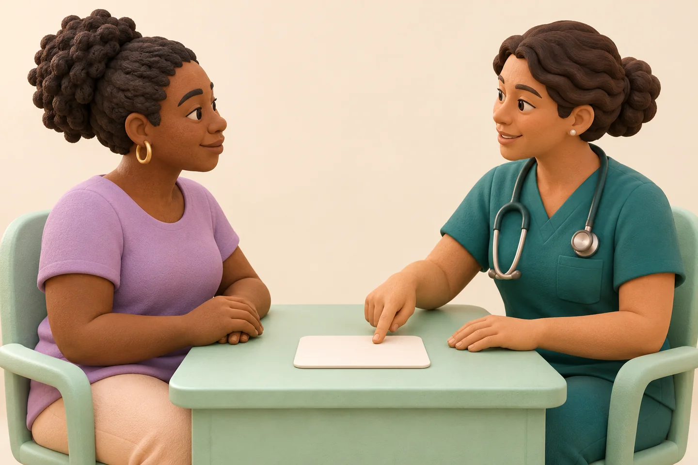

Planejado
Libras
Primeiro contato com Libras
Uma introdução aos elementos visuais e espaciais da língua.
Acervo planejado. A reprodução ficará disponível após a validação e a autorização dos vídeos.
Libras
Uma introdução aos elementos visuais e espaciais da língua.

Acolhimento
Um exemplo de como perguntar a preferência de comunicação.

Atendimento
Como conversar com a pessoa sobre o motivo da consulta e seu histórico.